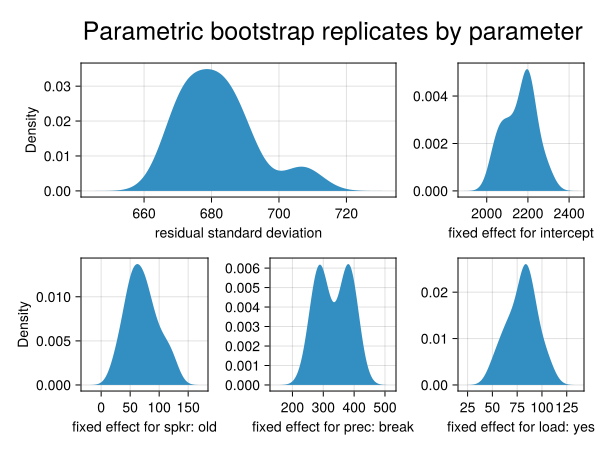
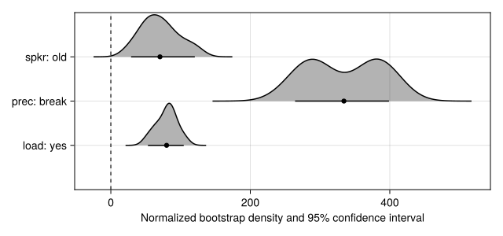
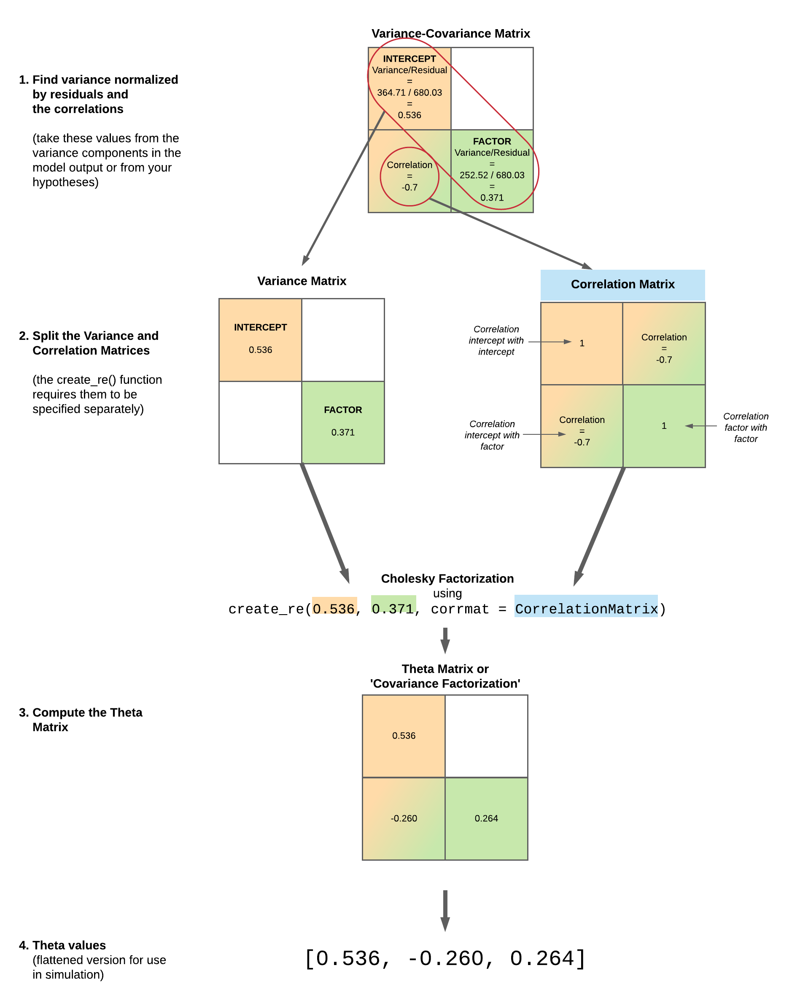
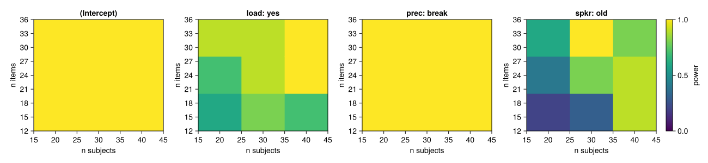

Power Analysis and Simulation Tutorial
contributed by Lisa Schwetlick and Daniel Backhaus
This tutorial demonstrates how to conduct power analyses and data simulation using Julia and the MixedModelsSim package.
Power analysis is an important tool for planning an experimental design. Here we show how to:
- Use existing data as a basis for power calculations by simulating new data.
- Adapt parameters in a given linear mixed model to analyze power without changing the existing data set.
- Create a (simple) balanced fully crossed dataset from scratch and analyze power.
- Recreate a more complex dataset from scratch and analyze power for specific model parameter but various sample sizes.
Setup
Load the packages we'll be using in Julia
First, here are the packages needed in this example.
using MixedModels # run mixed models
using MixedModelsSim # simulation utilities
using DataFrames, Tables # work with dataframes
using StableRNGs # random number generator
using Statistics # basic statistical functions
using DataFrameMacros # dplyr-like operations
using CairoMakie # plotting package
CairoMakie.activate!(type="svg") # use vector graphics
using MixedModelsMakie # some extra plotting function for MixedModels
using ProgressMeter # show progress in loopsDefine number of iterations
Here we define how many model simulations we want to do. A large number will give more reliable results, but will take longer to compute. It is useful to set it to a low number for testing, and increase it for your final analysis.
# for real power analysis, set this much higher (e.g. 1000)
nsims = 1010Use existing data to simulate new data
Build a linear mixed model from existing data
For the first example we are going to simulate data bootstrapped from an existing data set, namely Experiment 2 from
Kronmüller, E., & Barr, D. J. (2007). Perspective-free pragmatics: Broken precedents and the recovery-from-preemption hypothesis. Journal of Memory and Language, 56(3), 436-455.
This was an experiment about how in a conversation the change of a speaker or the change of precedents (which are patterns of word usage to describe an object, e.g. one can refer to the same object "white shoes", "runners", "sneakers") affects the understanding.
In experiment, objects were presented on a screen while participants listened to instructions to move the objects around. Participants' eye movements were tracked. The dependent variable is response time, defined as the latency between the onset of the test description and the moment at which the target was selected. The independent variables are speaker (old vs. new), precedents (maintain vs. break) and cognitive load (yes vs. no; from a secondary memory task).
We first load the data and define some characteristics like the contrasts and the underlying model. This dataset is one of the example datasets provided by MixedModels.jl.
Load existing data:
kb07 = MixedModels.dataset(:kb07);Arrow.Table with 1789 rows, 7 columns, and schema:
:subj String
:item String
:spkr String
:prec String
:load String
:rt_trunc Int16
:rt_raw Int16Set contrasts:
contrasts = Dict(:spkr => HelmertCoding(),
# set the reference level such that all the coefs
# have the same sign, which makes the plotting nicer
:prec => HelmertCoding(base="maintain"),
:load => HelmertCoding(),
# pseudo-contrast for grouping variables
:item => Grouping(),
:subj => Grouping());Dict{Symbol, StatsModels.AbstractContrasts} with 5 entries:
:item => Grouping()
:spkr => HelmertCoding(nothing, nothing)
:load => HelmertCoding(nothing, nothing)
:prec => HelmertCoding("maintain", nothing)
:subj => Grouping()The chosen linear mixed model (LMM) for this dataset is defined by the following model formula:
kb07_f = @formula(rt_trunc ~ 1 + spkr + prec + load + (1|subj) + (1 + prec|item));FormulaTerm
Response:
rt_trunc(unknown)
Predictors:
1
spkr(unknown)
prec(unknown)
load(unknown)
(subj)->1 | subj
(prec,item)->(1 + prec) | itemFit the model:
kb07_m = fit(MixedModel, kb07_f, kb07; contrasts=contrasts)Linear mixed model fit by maximum likelihood
rt_trunc ~ 1 + spkr + prec + load + (1 | subj) + (1 + prec | item)
logLik -2 logLik AIC AICc BIC
-14331.9251 28663.8501 28681.8501 28681.9513 28731.2548
Variance components:
Column Variance Std.Dev. Corr.
item (Intercept) 133015.318 364.713
prec: break 63767.106 252.521 +0.70
subj (Intercept) 88819.341 298.026
Residual 462443.369 680.032
Number of obs: 1789; levels of grouping factors: 32, 56
Fixed-effects parameters:
───────────────────────────────────────────────────
Coef. Std. Error z Pr(>|z|)
───────────────────────────────────────────────────
(Intercept) 2181.85 77.4681 28.16 <1e-99
spkr: old 67.879 16.0785 4.22 <1e-04
prec: break 333.791 47.4472 7.03 <1e-11
load: yes 78.5904 16.0785 4.89 <1e-05
───────────────────────────────────────────────────Simulate from existing data with same model parameters
We will first look at the power of the dataset with the same parameters as in the original data set. This means that each dataset will have the exact number of observations as the original data. Here, we use the model kb07_m we fitted above to our dataset kb07.
You can use the parametricbootstrap() function to run nsims iterations of data sampled using the parameters from kb07_m.
The parametric bootstrap is actually a simulation procedure. Each bootstrap iteration
- simulates new data based on an existing model
- then fits a model to that data to obtain new estimates.
Set up a random seed to make the simulation reproducible. You can use your favourite number.
We use StableRNG from the StableRNGs.jl package rather than Random.MersenneTwister. StableRNG guarantees the same sequence of random numbers across Julia versions and platforms, which is important for reproducible simulation results in collaborative or long-running projects.
To use multithreading, you need to set the number of worker threads you want to use. In VS Code, open the settings (gear icon in the lower left corner) and search for "thread". Set julia.NumThreads to the number of threads you want to use (at least 1 less than the total number of processor cores available, so that you can continue watching YouTube while the simulation runs).
Set random seed for reproducibility:
rng = StableRNG(42);StableRNGs.LehmerRNG(state=0x00000000000000000000000000000055)Run nsims iterations:
kb07_sim = parametricbootstrap(rng, nsims, kb07_m);MixedModelBootstrap with 10 samples
parameter min q25 median mean q75 max
┌───────────────────────────────────────────────────────────────────────
1 │ β1 2048.34 2111.34 2187.4 2161.78 2205.72 2284.56
2 │ β2 29.0592 52.4442 68.7261 70.4431 84.2045 120.402
3 │ β3 264.158 291.268 331.922 334.214 379.872 398.857
4 │ β4 53.2007 69.8364 82.0521 79.949 88.7738 104.533
5 │ σ 668.974 673.209 681.364 681.789 687.03 707.028
6 │ σ1 238.633 307.944 335.998 339.74 384.914 442.906
7 │ σ2 206.559 235.392 248.176 254.659 258.539 318.495
8 │ ρ1 0.210786 0.613263 0.741144 0.676057 0.788633 0.841817
9 │ σ3 236.31 261.661 288.854 293.783 326.272 369.074
10 │ θ1 0.350737 0.451335 0.485922 0.498214 0.566389 0.643223
11 │ θ2 0.0811073 0.202053 0.271352 0.25367 0.310501 0.357062
12 │ θ3 0.181732 0.224736 0.260563 0.261744 0.286181 0.37614
13 │ θ4 0.34278 0.373606 0.430012 0.431573 0.480378 0.551702
The returned value kb07_sim contains the results of the bootstrapping procedure, which we can convert to a dataframe
df = DataFrame(kb07_sim.allpars);
first(df, 12)| Row | iter | type | group | names | value |
|---|---|---|---|---|---|
| Int64 | String | String? | String? | Float64 | |
| 1 | 1 | β | missing | (Intercept) | 2284.56 |
| 2 | 1 | β | missing | spkr: old | 29.0592 |
| 3 | 1 | β | missing | prec: break | 379.985 |
| 4 | 1 | β | missing | load: yes | 53.2007 |
| 5 | 1 | σ | item | (Intercept) | 262.515 |
| 6 | 1 | σ | item | prec: break | 258.767 |
| 7 | 1 | ρ | item | (Intercept), prec: break | 0.210786 |
| 8 | 1 | σ | subj | (Intercept) | 291.504 |
| 9 | 1 | σ | residual | missing | 672.498 |
| 10 | 2 | β | missing | (Intercept) | 2123.42 |
| 11 | 2 | β | missing | spkr: old | 64.8504 |
| 12 | 2 | β | missing | prec: break | 289.896 |
The dataframe df has nsims * npar rows, where npar is the total number of parameters.
nrow(df)90We can now plot some bootstrapped parameters:
fig = Figure()
σres = @subset(df, :type == "σ" && :group == "residual")
ax = Axis(fig[1,1:2]; xlabel = "residual standard deviation", ylabel = "Density")
density!(ax, σres.value)
βInt = @subset(df, :type == "β" && :names == "(Intercept)")
ax = Axis(fig[1,3]; xlabel = "fixed effect for intercept")
density!(ax, βInt.value)
βSpeaker = @subset(df, :type == "β" && :names == "spkr: old")
ax = Axis(fig[2,1]; xlabel = "fixed effect for spkr: old", ylabel = "Density")
density!(ax, βSpeaker.value)
βPrecedents = @subset(df, :type == "β" && :names == "prec: break")
ax = Axis(fig[2,2]; xlabel = "fixed effect for prec: break")
density!(ax, βPrecedents.value)
βLoad = @subset(df, :type == "β" && :names == "load: yes")
ax = Axis(fig[2,3]; xlabel = "fixed effect for load: yes")
density!(ax, βLoad.value)
Label(fig[0,:]; text = "Parametric bootstrap replicates by parameter", fontsize=25)
fig
For the fixed effects, we can do this more succinctly via the ridgeplot functionality in MixedModelsMakie, even optionally omitting the intercept (which we often don't care about).
ridgeplot(kb07_sim; show_intercept=false)
Next, we extract the p-values of the fixed-effects parameters into a dataframe
kb07_sim_df = DataFrame(kb07_sim.coefpvalues);
first(kb07_sim_df, 8)| Row | iter | coefname | β | se | z | p |
|---|---|---|---|---|---|---|
| Int64 | Symbol | Float64 | Float64 | Float64 | Float64 | |
| 1 | 1 | (Intercept) | 2284.56 | 62.6402 | 36.4711 | 3.18514e-291 |
| 2 | 1 | spkr: old | 29.0592 | 15.9004 | 1.82757 | 0.0676139 |
| 3 | 1 | prec: break | 379.985 | 48.4287 | 7.84627 | 4.28606e-15 |
| 4 | 1 | load: yes | 53.2007 | 15.9004 | 3.34587 | 0.000820243 |
| 5 | 2 | (Intercept) | 2123.42 | 86.347 | 24.5917 | 1.54822e-133 |
| 6 | 2 | spkr: old | 64.8504 | 16.2805 | 3.98333 | 6.79569e-5 |
| 7 | 2 | prec: break | 289.896 | 56.5226 | 5.12884 | 2.91528e-7 |
| 8 | 2 | load: yes | 83.4592 | 16.2804 | 5.12635 | 2.95416e-7 |
Now that we have a bootstrapped data, we can start our power calculation.
Power calculation
The function power_table() from MixedModelsSim takes the output of parametricbootstrap() and calculates the proportion of simulations where the p-value is less than alpha for each coefficient. You can set the alpha argument to change the default value of 0.05 (justify your alpha).
ptbl = power_table(kb07_sim, 0.05)4-element Vector{@NamedTuple{coefname::String, power::Float64}}:
(coefname = "prec: break", power = 1.0)
(coefname = "(Intercept)", power = 1.0)
(coefname = "spkr: old", power = 0.9)
(coefname = "load: yes", power = 1.0)An estimated power of 1 means that in every iteration the specific parameter we are looking at was below our alpha. An estimated power of 0.5 means that in half of our iterations the specific parameter we are looking at was below our alpha. An estimated power of 0 means that for none of our iterations the specific parameter we are looking at was below our alpha.
You can also do it manually:
prec_p = kb07_sim_df[kb07_sim_df.coefname .== Symbol("prec: break"),:p]
mean(prec_p .< 0.05)1.0For a nicer display, you can use pretty_table:
pretty_table(ptbl)┌─────────────┬─────────┐
│ coefname │ power │
│ String │ Float64 │
├─────────────┼─────────┤
│ prec: break │ 1.0 │
│ (Intercept) │ 1.0 │
│ spkr: old │ 0.9 │
│ load: yes │ 1.0 │
└─────────────┴─────────┘The simulation so far should not be interpreted as the power of the original K&B experiment. Observed power calculations are generally problematic. Instead, the example so far should serve to show how power can be computed using a simulation procedure.
In the next section, we show how to use previously observed data – such as pilot data – as the basis for a simulation study with a different effect size.
Adapt parameters in a given linear mixed model to analyze power without generating additional data
Let's say we want to check our power to detect effects of spkr, prec, and load that are only half the size as in our pilot data. We can set a new vector of beta values (fixed effects) with the β argument to parametricbootstrap().
Specify β:
new_beta = kb07_m.β
new_beta[2:4] = kb07_m.β[2:4] / 23-element Vector{Float64}:
33.93951071823291
166.89531071033326
39.2952206959237Run simulations:
kb07_sim_half = parametricbootstrap(StableRNG(42), nsims, kb07_m; β = new_beta);MixedModelBootstrap with 10 samples
parameter min q25 median mean q75 max
┌───────────────────────────────────────────────────────────────────────
1 │ β1 2048.34 2111.34 2187.4 2161.78 2205.72 2284.56
2 │ β2 -4.88035 18.5047 34.7866 36.5036 50.265 86.4629
3 │ β3 97.2627 124.373 165.027 167.319 212.977 231.961
4 │ β4 13.9055 30.5412 42.7569 40.6538 49.4786 65.2379
5 │ σ 668.974 673.209 681.364 681.789 687.03 707.028
6 │ σ1 238.633 307.944 335.998 339.74 384.914 442.906
7 │ σ2 206.559 235.392 248.176 254.659 258.539 318.495
8 │ ρ1 0.210786 0.613263 0.741144 0.676057 0.788633 0.841817
9 │ σ3 236.31 261.661 288.854 293.783 326.272 369.074
10 │ θ1 0.350737 0.451335 0.485922 0.498214 0.566389 0.643223
11 │ θ2 0.0811073 0.202053 0.271352 0.25367 0.310501 0.357062
12 │ θ3 0.181732 0.224736 0.260563 0.261744 0.286181 0.37614
13 │ θ4 0.34278 0.373606 0.430012 0.431573 0.480378 0.551702
Power calculation
power_table(kb07_sim_half)4-element Vector{@NamedTuple{coefname::String, power::Float64}}:
(coefname = "prec: break", power = 1.0)
(coefname = "(Intercept)", power = 1.0)
(coefname = "spkr: old", power = 0.5)
(coefname = "load: yes", power = 0.7)Create and analyze a (simple) balanced fully crossed dataset from scratch
In some situations, instead of using an existing dataset it may be useful to simulate the data from scratch. This could be the case when pilot data or data from a previous study are not available. Note that we still have to assume (or perhaps guess) a particular effect size, which can be derived from previous work (whether experimental or practical). In the worst case, we can start from the smallest effect size that we would find interesting or meaningful.
In order to simulate data from scratch, we have to:
- specify the effect sizes manually
- manually create an experimental design, according to which data can be simulated
If we simulate data from scratch, we can manipulate the arguments β, σ and θ (in addition to the number of subjects and items) Lets have a closer look at them, define their meaning and we will see where the corresponding values in the model output are.
Fixed Effects (βs)
β are our effect sizes.
If we look again on our LMM summary from the kb07-dataset kb07_m we see our four β under fixed-effects parameters in the Coef.-column.
kb07_mLinear mixed model fit by maximum likelihood
rt_trunc ~ 1 + spkr + prec + load + (1 | subj) + (1 + prec | item)
logLik -2 logLik AIC AICc BIC
-14331.9251 28663.8501 28681.8501 28681.9513 28731.2548
Variance components:
Column Variance Std.Dev. Corr.
item (Intercept) 133015.318 364.713
prec: break 63767.106 252.521 +0.70
subj (Intercept) 88819.341 298.026
Residual 462443.369 680.032
Number of obs: 1789; levels of grouping factors: 32, 56
Fixed-effects parameters:
───────────────────────────────────────────────────
Coef. Std. Error z Pr(>|z|)
───────────────────────────────────────────────────
(Intercept) 2181.85 77.4681 28.16 <1e-99
spkr: old 67.879 16.0785 4.22 <1e-04
prec: break 333.791 47.4472 7.03 <1e-11
load: yes 78.5904 16.0785 4.89 <1e-05
───────────────────────────────────────────────────kb07_m.β4-element Vector{Float64}:
2181.8526389652584
67.87902143646582
333.7906214206665
78.5904413918474(These can also be accessed with the appropriately named coef function.)
Residual Variance (σ)
σ is the residual-standard deviation listed under the variance components.
kb07_m.σ680.0318879278176Random Effects (θ)
The meaning of θ is a bit less intuitive. In a less complex model (one that only has intercepts for the random effects) or if we suppress the correlations in the formula with zerocorr() then θ describes the relationship between the standard deviation of the random effects and the residual standard deviation.
In our kb07_m example:
- The
residualstandard deviation is680.032. - The standard deviation of our first variance component
item (Intercept)is364.713. - Thus our first
θis the relationship: variance component divided byresidualstandard deviation: $364.713 / 680.032 = 0.53631$
kb07_m.θ4-element Vector{Float64}:
0.5363169849390036
0.2598200476735221
0.26530218818915025
0.43825259400841543We also can calculate the θ for variance component subj (Intercept). The residual standard deviation is 680.032. The standard deviation of our variance component subj (Intercept) is 298.026. Thus, the related θ is the relationship: variance component divided by residual standard deviation 298.026 / 680.032 = 0.438252
We can not calculate the θs for variance component item prec: break this way, because it includes the correlation of item prec: break and item (Intercept). But keep in mind that the relation of item prec: break-variability (252.521) and the residual-variability (680.032) is $252.521 / 680.032 = 0.3713369$.
The θ vector is the flattened version of the lower Cholesky factor variance-covariance matrix. The Cholesky factor is in some sense a "matrix square root" (so like storing standard deviations instead of variances) and is a lower triangular matrix. The on-diagonal elements are just the standard deviations (the σ's). If all off-diagonal elements are zero, we can use our calculation above. The off-diagonal elements are covariances and correspond to the correlations (the ρ's). If they are unequal to zero, as it is in our kb07-dataset, one way to get the two missing θ-values is to take the values directly from the model we have already fitted.
See the two inner values:
kb07_m.θ4-element Vector{Float64}:
0.5363169849390036
0.2598200476735221
0.26530218818915025
0.43825259400841543Another way is to make use of the create_re() function. Here you have to define the relation of all random effects variabilities to the variability of the residuals, as shown above, and the correlation-matrices.
Let's start by defining the correlation matrix for the item-part.
The diagonal is always 1.0 because everything is perfectly correlated with itself. The elements below the diagonal follow the same form as the Corr. entries in the output of VarCorr(). In our example the correlation of item prec: break and item (Intercept) is -0.7. The elements above the diagonal are just a mirror image.
re_item_corr = [1.0 -0.7; -0.7 1.0]2×2 Matrix{Float64}:
1.0 -0.7
-0.7 1.0Now we put together all relations of standard deviations and the correlation-matrix for the item-group. This calculates the covariance factorization which is the theta matrix.
re_item = create_re(0.536, 0.371; corrmat = re_item_corr)2×2 LinearAlgebra.LowerTriangular{Float64, Matrix{Float64}}:
0.536 ⋅
-0.2597 0.264947
Don't be too specific with your values in create_re(). Generally we don't these values very precisely because estimating them precisely requires large amounts of data. Additionally, if there are numerical problems (rounding errors), you will get the error-message: PosDefException: matrix is not Hermitian; Cholesky factorization failed.
Although we advise against using these values, you can extract the exact values like so (just as a pedagogical demonstration):
corr_exact = VarCorr(kb07_m).σρ.item.ρ[1]
σ_residuals_exact = kb07_m.σ
σ_1_exact = VarCorr(kb07_m).σρ.item.σ[1] / σ_residuals_exact
σ_2_exact = VarCorr(kb07_m).σρ.item.σ[2] / σ_residuals_exact
re_item_corr = [1.0 corr_exact; corr_exact 1.0]
re_item = create_re(σ_1_exact, σ_2_exact; corrmat = re_item_corr)2×2 LinearAlgebra.LowerTriangular{Float64, Matrix{Float64}}:
0.536317 ⋅
0.25982 0.265302Let's continue with the subj-part.
Since there the by-subject random effects have only one entry (the intercept), there are no correlations to specify and we can omit the corrmat argument.
Now we put together all relations of standard deviations and the correlation-matrix for the subj-group:
This calculates the covariance factorization which is the theta matrix.
re_subj = create_re(0.438)1×1 LinearAlgebra.LowerTriangular{Float64, LinearAlgebra.Diagonal{Float64, Vector{Float64}}}:
0.438If you want the exact value you can use
σ_residuals_exact = kb07_m.σ
σ_3_exact = VarCorr(kb07_m).σρ.subj.σ[1] / σ_residuals_exact
re_subj = create_re(σ_3_exact)1×1 LinearAlgebra.LowerTriangular{Float64, LinearAlgebra.Diagonal{Float64, Vector{Float64}}}:
0.43825259400841543As mentioned above θ is the compact form of these covariance matrices:
createθ(kb07_m; item=re_item, subj=re_subj)4-element Vector{Float64}:
0.5363169849390036
0.2598200476735221
0.2653021881891503
0.43825259400841543The function createθ is putting the random effects into the correct order and then putting them into the compact form. Even for the same formula, the order may vary between datasets (and hence models fit to those datasets) because of a particular computational trick used in MixedModels.jl. Because of this trick, we need to specify the model along with the random effects so that the correct order can be determined.
We can install these parameter in the parametricbootstrap()-function or in the model like this:
# MixedModels and Makie both export `update!`, so we use the full module path to disambiguate
MixedModelsSim.update!(kb07_m; item=re_item, subj=re_subj)Linear mixed model fit by maximum likelihood
rt_trunc ~ 1 + spkr + prec + load + (1 | subj) + (1 + prec | item)
logLik -2 logLik AIC AICc BIC
-14331.9251 28663.8501 28681.8501 28681.9513 28731.2548
Variance components:
Column Variance Std.Dev. Corr.
item (Intercept) 133015.318 364.713
prec: break 63767.106 252.521 +0.70
subj (Intercept) 88819.341 298.026
Residual 462443.369 680.032
Number of obs: 1789; levels of grouping factors: 32, 56
Fixed-effects parameters:
───────────────────────────────────────────────────
Coef. Std. Error z Pr(>|z|)
───────────────────────────────────────────────────
(Intercept) 2181.85 77.4681 28.16 <1e-99
spkr: old 67.879 16.0785 4.22 <1e-04
prec: break 333.791 47.4472 7.03 <1e-11
load: yes 78.5904 16.0785 4.89 <1e-05
───────────────────────────────────────────────────A simple example from scratch
Having this knowledge about the parameters we can now simulate data from scratch
The simdat_crossed() function from MixedModelsSim lets you set up a data frame with a specified experimental design. For now, it only makes fully balanced crossed designs, but you can generate an unbalanced design by simulating data for the largest cell and deleting extra rows.
First, we will set an easy design where subj_n subjects per age group (Old or Young) respond to item_n items in each of two conditions (A or B).
Your factors need to be specified separately for between-subject, between-item, and within-subject/item factors using Dict with the name of each factor as the keys and vectors with the names of the levels as values.
We start with the between subject factors:
subj_btwn = Dict(:age => ["O", "Y"])Dict{Symbol, Vector{String}} with 1 entry:
:age => ["O", "Y"]There are no between-item factors in this design so you can omit it or set it to nothing. Note that if you have factors which are between subject and between item, you need to put them in both dicts.
item_btwn = nothingNext, we put within-subject/item factors in a dict:
both_win = Dict(:condition => ["A", "B"])Dict{Symbol, Vector{String}} with 1 entry:
:condition => ["A", "B"]Define subject and item number:
subj_n = 10
item_n = 3030Simulate data:
dat = simdat_crossed(subj_n,
item_n,
subj_btwn = subj_btwn,
item_btwn = item_btwn,
both_win = both_win);600-element Vector{@NamedTuple{subj::String, age::String, item::String, condition::String, dv::Float64}}:
(subj = "S01", age = "O", item = "I01", condition = "A", dv = -0.4809495370698347)
(subj = "S02", age = "Y", item = "I01", condition = "A", dv = -2.8656261808672276)
(subj = "S03", age = "O", item = "I01", condition = "A", dv = 0.13234100624151432)
(subj = "S04", age = "Y", item = "I01", condition = "A", dv = 0.5329995888592005)
(subj = "S05", age = "O", item = "I01", condition = "A", dv = -0.7831365478235264)
(subj = "S06", age = "Y", item = "I01", condition = "A", dv = 0.22779166930032535)
(subj = "S07", age = "O", item = "I01", condition = "A", dv = 1.429480421026713)
(subj = "S08", age = "Y", item = "I01", condition = "A", dv = -0.1567313500081724)
(subj = "S09", age = "O", item = "I01", condition = "A", dv = -1.1242041194039414)
(subj = "S10", age = "Y", item = "I01", condition = "A", dv = 1.1407745712695636)
⋮
(subj = "S02", age = "Y", item = "I30", condition = "B", dv = -0.3375546464548352)
(subj = "S03", age = "O", item = "I30", condition = "B", dv = 1.0522011810008676)
(subj = "S04", age = "Y", item = "I30", condition = "B", dv = 0.09241305116615209)
(subj = "S05", age = "O", item = "I30", condition = "B", dv = -0.0620903228391959)
(subj = "S06", age = "Y", item = "I30", condition = "B", dv = 1.401310771180205)
(subj = "S07", age = "O", item = "I30", condition = "B", dv = 0.7484208805960506)
(subj = "S08", age = "Y", item = "I30", condition = "B", dv = 0.40870184442534224)
(subj = "S09", age = "O", item = "I30", condition = "B", dv = -0.09988440224739585)
(subj = "S10", age = "Y", item = "I30", condition = "B", dv = -0.22152693899052223)Have a look:
first(DataFrame(dat),8)| Row | subj | age | item | condition | dv |
|---|---|---|---|---|---|
| String | String | String | String | Float64 | |
| 1 | S01 | O | I01 | A | -0.48095 |
| 2 | S02 | Y | I01 | A | -2.86563 |
| 3 | S03 | O | I01 | A | 0.132341 |
| 4 | S04 | Y | I01 | A | 0.533 |
| 5 | S05 | O | I01 | A | -0.783137 |
| 6 | S06 | Y | I01 | A | 0.227792 |
| 7 | S07 | O | I01 | A | 1.42948 |
| 8 | S08 | Y | I01 | A | -0.156731 |
The values we see in the column dv is just random noise (drawn from the standard normal distribution)
Set contrasts:
contrasts = Dict(:age => HelmertCoding(),
:condition => HelmertCoding(),
:subj => Grouping(),
:item => Grouping());Dict{Symbol, StatsModels.AbstractContrasts} with 4 entries:
:item => Grouping()
:age => HelmertCoding(nothing, nothing)
:condition => HelmertCoding(nothing, nothing)
:subj => Grouping()Define formula:
f1 = @formula(dv ~ 1 + age * condition + (1|item) + (1|subj));FormulaTerm
Response:
dv(unknown)
Predictors:
1
age(unknown)
condition(unknown)
age(unknown) & condition(unknown)
(item)->1 | item
(subj)->1 | subjNote that we did not include condition as random slopes for item and subject. This is mainly to keep the example simple and to keep the parameter θ easier to understand (see Section 3 above for the explanation of θ).
Fit the model:
m1 = fit(MixedModel, f1, dat; contrasts=contrasts)Linear mixed model fit by maximum likelihood
dv ~ 1 + age + condition + age & condition + (1 | item) + (1 | subj)
logLik -2 logLik AIC AICc BIC
-857.2727 1714.5453 1728.5453 1728.7345 1759.3238
Variance components:
Column Variance Std.Dev.
item (Intercept) 0.0086799 0.0931662
subj (Intercept) 0.0000000 0.0000000
Residual 1.0118511 1.0059081
Number of obs: 600; levels of grouping factors: 30, 10
Fixed-effects parameters:
───────────────────────────────────────────────────────────────
Coef. Std. Error z Pr(>|z|)
───────────────────────────────────────────────────────────────
(Intercept) 0.00131713 0.0444494 0.03 0.9764
age: Y -0.00965886 0.041066 -0.24 0.8141
condition: B -0.0209549 0.041066 -0.51 0.6099
age: Y & condition: B 0.0633878 0.041066 1.54 0.1227
───────────────────────────────────────────────────────────────Because the dv is just random noise from N(0,1), there will be basically no subject or item random variance, residual variance will be near 1.0, and the estimates for all effects should be small. Don't worry, we'll specify fixed and random effects directly in parametricbootstrap().
Set random seed for reproducibility:
rng = StableRNG(42);StableRNGs.LehmerRNG(state=0x00000000000000000000000000000055)Specify β, σ, and θ, we just made up this parameter:
new_beta = [0., 0.25, 0.25, 0.]
new_sigma = 2.0
# create_re with a single argument specifies the random-effect SD relative to the residual SD
re_subj_simple = create_re(1.0)
re_item_simple = create_re(1.0)
# createθ sorts the random effects into the order MixedModels.jl expects for this model
new_theta = createθ(m1; subj=re_subj_simple, item=re_item_simple)2-element Vector{Float64}:
1.0
1.0Run nsims iterations:
sim1 = parametricbootstrap(rng, nsims, m1;
β = new_beta,
σ = new_sigma,
θ = new_theta);MixedModelBootstrap with 10 samples
parameter min q25 median mean q75 ⋯
┌───────────────────────────────────────────────────────────────────────
1 │ β1 -1.25147 -0.488806 0.0154486 -0.0777462 0.419323 ⋯
2 │ β2 -0.155497 0.0247165 0.170911 0.348418 0.501833 ⋯
3 │ β3 0.0618462 0.224195 0.257216 0.249637 0.310088 ⋯
4 │ β4 -0.122424 -0.0540846 0.00129136 0.00293312 0.0693037 ⋯
5 │ σ 1.88054 1.97655 2.02238 2.00934 2.04723 ⋯
6 │ σ1 1.67481 1.84938 2.00474 1.95058 2.07691 ⋯
7 │ σ2 1.09918 1.49377 1.90432 1.81164 2.11644 ⋯
8 │ θ1 0.822038 0.908829 0.986301 0.971466 1.02997 ⋯
9 │ θ2 0.584502 0.721782 0.93049 0.900966 1.05571 ⋯
Power calculation
ptbl= power_table(sim1)4-element Vector{@NamedTuple{coefname::String, power::Float64}}:
(coefname = "age: Y", power = 0.0)
(coefname = "condition: B", power = 0.9)
(coefname = "(Intercept)", power = 0.0)
(coefname = "age: Y & condition: B", power = 0.0)For nicely displaying it, you can use pretty_table:
pretty_table(ptbl)┌───────────────────────┬─────────┐
│ coefname │ power │
│ String │ Float64 │
├───────────────────────┼─────────┤
│ age: Y │ 0.0 │
│ condition: B │ 0.9 │
│ (Intercept) │ 0.0 │
│ age: Y & condition: B │ 0.0 │
└───────────────────────┴─────────┘Compute power curves for a more complex dataset
Recreate the kb07-dataset from scratch
For full control over all parameters in our kb07 data set we will recreate the design using the method shown above.
Define subject and item number:
subj_n = 56
item_n = 3232Define factors in a dict:
subj_btwn = nothing
item_btwn = nothing
both_win = Dict(:spkr => ["old", "new"],
:prec => ["maintain", "break"],
:load => ["yes", "no"]);Dict{Symbol, Vector{String}} with 3 entries:
:spkr => ["old", "new"]
:load => ["yes", "no"]
:prec => ["maintain", "break"]Try: Play with simdat_crossed.
Simulate data:
fake_kb07 = simdat_crossed(subj_n, item_n,
subj_btwn = subj_btwn,
item_btwn = item_btwn,
both_win = both_win);14336-element Vector{@NamedTuple{subj::String, item::String, spkr::String, load::String, prec::String, dv::Float64}}:
(subj = "S01", item = "I01", spkr = "old", load = "yes", prec = "maintain", dv = -1.2358308670452733)
(subj = "S02", item = "I01", spkr = "old", load = "yes", prec = "maintain", dv = 1.1211205587450286)
(subj = "S03", item = "I01", spkr = "old", load = "yes", prec = "maintain", dv = -1.4075201513678317)
(subj = "S04", item = "I01", spkr = "old", load = "yes", prec = "maintain", dv = 1.3960790506787952)
(subj = "S05", item = "I01", spkr = "old", load = "yes", prec = "maintain", dv = 1.3496711293202626)
(subj = "S06", item = "I01", spkr = "old", load = "yes", prec = "maintain", dv = 1.5408174445242082)
(subj = "S07", item = "I01", spkr = "old", load = "yes", prec = "maintain", dv = -0.6235140021068887)
(subj = "S08", item = "I01", spkr = "old", load = "yes", prec = "maintain", dv = 1.3482481117313239)
(subj = "S09", item = "I01", spkr = "old", load = "yes", prec = "maintain", dv = -0.11689178975406107)
(subj = "S10", item = "I01", spkr = "old", load = "yes", prec = "maintain", dv = -0.9713677128637843)
⋮
(subj = "S48", item = "I32", spkr = "new", load = "no", prec = "break", dv = 0.18179881629691827)
(subj = "S49", item = "I32", spkr = "new", load = "no", prec = "break", dv = -1.2805755598882147)
(subj = "S50", item = "I32", spkr = "new", load = "no", prec = "break", dv = -0.11977299831080886)
(subj = "S51", item = "I32", spkr = "new", load = "no", prec = "break", dv = -0.535398924850542)
(subj = "S52", item = "I32", spkr = "new", load = "no", prec = "break", dv = -1.0394458705818757)
(subj = "S53", item = "I32", spkr = "new", load = "no", prec = "break", dv = -0.9592427887682459)
(subj = "S54", item = "I32", spkr = "new", load = "no", prec = "break", dv = 0.9719018724293028)
(subj = "S55", item = "I32", spkr = "new", load = "no", prec = "break", dv = -1.1563158553375683)
(subj = "S56", item = "I32", spkr = "new", load = "no", prec = "break", dv = -0.011729941996125872)Make a dataframe:
fake_kb07_df = DataFrame(fake_kb07);Have a look:
first(fake_kb07_df,8)| Row | subj | item | spkr | load | prec | dv |
|---|---|---|---|---|---|---|
| String | String | String | String | String | Float64 | |
| 1 | S01 | I01 | old | yes | maintain | -1.23583 |
| 2 | S02 | I01 | old | yes | maintain | 1.12112 |
| 3 | S03 | I01 | old | yes | maintain | -1.40752 |
| 4 | S04 | I01 | old | yes | maintain | 1.39608 |
| 5 | S05 | I01 | old | yes | maintain | 1.34967 |
| 6 | S06 | I01 | old | yes | maintain | 1.54082 |
| 7 | S07 | I01 | old | yes | maintain | -0.623514 |
| 8 | S08 | I01 | old | yes | maintain | 1.34825 |
The function simdat_crossed generates a balanced fully crossed design. Unfortunately, our original design is not balanced fully crossed. Every subject saw an image only once, thus in one of eight possible conditions. To simulate that we only keep one of every eight lines.
We sort the dataframe to enable easier selection
sort!(fake_kb07_df, [:subj, :item, :load, :prec, :spkr])In order to select only the relevant rows of the data set we define an index which represents a random choice of one of every eight rows. First we generate a vector idx which represents which row to keep in each set of 8.
len = div(length(fake_kb07), 8) # integer division
idx = rand(rng, 1:8 , len)
show(idx)[1, 8, 1, 5, 4, 5, 7, 2, 2, 5, 6, 3, 1, 6, 2, 5, 5, 3, 3, 4, 7, 6, 2, 3, 4, 1, 1, 5, 6, 7, 3, 6, 7, 2, 4, 6, 6, 8, 5, 1, 2, 7, 5, 1, 7, 5, 3, 2, 5, 2, 3, 3, 7, 3, 2, 6, 1, 6, 6, 4, 6, 1, 4, 6, 1, 6, 8, 3, 4, 1, 2, 2, 5, 8, 7, 2, 6, 7, 2, 7, 1, 6, 3, 1, 3, 6, 3, 5, 4, 6, 7, 3, 7, 2, 1, 8, 1, 2, 4, 8, 7, 6, 1, 8, 8, 2, 3, 3, 3, 4, 4, 6, 5, 2, 8, 4, 8, 6, 8, 8, 8, 1, 6, 4, 5, 8, 3, 3, 4, 7, 3, 4, 8, 7, 4, 2, 8, 6, 7, 8, 6, 2, 1, 5, 3, 8, 6, 3, 4, 3, 3, 4, 3, 4, 1, 3, 2, 5, 7, 7, 4, 3, 1, 4, 4, 4, 5, 6, 3, 6, 3, 2, 4, 5, 8, 2, 2, 1, 4, 1, 2, 4, 1, 4, 6, 3, 8, 3, 8, 1, 8, 5, 1, 6, 8, 5, 8, 7, 3, 5, 3, 4, 4, 1, 5, 2, 7, 1, 2, 4, 6, 4, 2, 6, 7, 4, 8, 3, 7, 6, 3, 5, 8, 2, 3, 7, 1, 8, 4, 8, 1, 4, 8, 6, 7, 8, 3, 7, 6, 5, 5, 6, 7, 7, 5, 5, 4, 6, 7, 7, 4, 4, 7, 6, 7, 3, 6, 1, 3, 6, 7, 7, 6, 6, 1, 5, 1, 2, 6, 2, 7, 7, 8, 2, 5, 5, 7, 4, 5, 6, 7, 8, 8, 7, 8, 2, 2, 6, 2, 2, 4, 2, 7, 2, 1, 7, 3, 8, 7, 7, 5, 1, 6, 8, 8, 7, 7, 4, 3, 1, 7, 5, 1, 8, 3, 2, 5, 6, 7, 3, 4, 4, 4, 1, 2, 5, 8, 5, 5, 1, 3, 6, 7, 7, 8, 1, 4, 2, 8, 7, 4, 4, 8, 5, 7, 3, 4, 3, 4, 6, 7, 3, 5, 1, 7, 3, 5, 3, 4, 1, 3, 5, 8, 7, 4, 7, 8, 6, 4, 1, 2, 1, 5, 3, 3, 7, 4, 2, 1, 1, 1, 6, 3, 5, 4, 6, 5, 2, 5, 3, 3, 4, 5, 1, 5, 4, 1, 2, 3, 7, 4, 2, 6, 4, 5, 8, 8, 1, 5, 6, 8, 2, 3, 8, 7, 7, 1, 3, 7, 4, 4, 2, 6, 7, 3, 1, 2, 1, 2, 3, 6, 8, 8, 5, 7, 2, 1, 5, 5, 7, 6, 2, 6, 4, 1, 4, 1, 3, 4, 5, 2, 2, 4, 8, 8, 5, 8, 5, 5, 2, 8, 7, 2, 3, 8, 8, 6, 2, 8, 3, 4, 5, 3, 6, 6, 8, 1, 5, 5, 8, 2, 5, 3, 4, 8, 4, 6, 8, 2, 2, 7, 6, 4, 4, 5, 6, 8, 4, 7, 8, 8, 6, 8, 7, 6, 5, 5, 4, 3, 5, 2, 1, 8, 1, 5, 8, 8, 8, 7, 6, 2, 4, 4, 7, 4, 2, 4, 2, 1, 8, 2, 2, 8, 2, 5, 6, 1, 5, 8, 6, 3, 8, 6, 3, 6, 1, 7, 2, 3, 1, 4, 5, 3, 6, 4, 1, 6, 6, 5, 3, 6, 5, 6, 4, 5, 7, 4, 6, 3, 6, 2, 3, 6, 2, 2, 5, 3, 6, 4, 3, 7, 5, 5, 6, 7, 5, 1, 2, 7, 7, 5, 1, 6, 5, 3, 8, 7, 2, 7, 5, 4, 3, 8, 1, 4, 7, 1, 2, 8, 4, 7, 3, 6, 6, 5, 7, 7, 7, 2, 1, 7, 2, 8, 2, 7, 2, 6, 4, 7, 6, 1, 8, 2, 8, 1, 7, 6, 1, 4, 4, 3, 8, 1, 8, 5, 3, 1, 4, 6, 8, 1, 1, 6, 5, 5, 4, 8, 1, 1, 3, 6, 3, 3, 6, 6, 5, 7, 6, 1, 6, 2, 2, 1, 3, 3, 3, 2, 5, 3, 4, 8, 7, 7, 5, 7, 8, 6, 7, 8, 1, 3, 3, 3, 3, 2, 7, 7, 7, 3, 4, 6, 3, 2, 5, 1, 4, 8, 2, 6, 7, 4, 2, 7, 4, 6, 2, 4, 8, 1, 7, 1, 6, 3, 8, 8, 1, 4, 4, 4, 5, 6, 1, 3, 4, 1, 3, 4, 7, 5, 3, 4, 5, 3, 8, 2, 2, 1, 5, 8, 1, 3, 6, 6, 2, 3, 5, 3, 4, 3, 4, 8, 6, 1, 7, 4, 8, 3, 8, 1, 4, 5, 7, 6, 6, 2, 6, 4, 3, 8, 1, 2, 2, 6, 3, 6, 5, 4, 6, 6, 2, 1, 1, 3, 2, 8, 4, 7, 6, 3, 8, 8, 3, 3, 1, 4, 1, 6, 1, 6, 1, 3, 3, 3, 8, 4, 7, 5, 7, 1, 4, 3, 7, 3, 1, 1, 2, 3, 5, 2, 5, 7, 6, 2, 1, 2, 8, 6, 3, 1, 4, 6, 2, 4, 6, 4, 3, 8, 1, 2, 3, 3, 3, 3, 1, 1, 2, 6, 1, 1, 3, 7, 7, 7, 6, 4, 5, 1, 2, 1, 4, 1, 1, 2, 6, 5, 3, 4, 1, 6, 3, 4, 7, 5, 2, 4, 7, 8, 1, 1, 5, 3, 6, 8, 4, 4, 2, 4, 4, 6, 4, 7, 3, 4, 1, 7, 4, 2, 3, 1, 8, 3, 8, 7, 2, 3, 1, 2, 8, 1, 2, 3, 5, 6, 4, 4, 8, 8, 2, 8, 2, 7, 6, 4, 4, 1, 5, 5, 4, 6, 6, 3, 8, 7, 1, 4, 5, 8, 1, 1, 5, 6, 4, 2, 5, 4, 3, 7, 2, 2, 6, 3, 3, 2, 2, 8, 1, 2, 7, 5, 8, 1, 2, 8, 3, 8, 6, 7, 6, 1, 4, 8, 3, 3, 2, 5, 2, 3, 8, 4, 5, 2, 4, 8, 6, 4, 1, 7, 4, 3, 8, 6, 6, 4, 3, 5, 7, 3, 4, 8, 2, 3, 5, 6, 3, 8, 5, 8, 7, 3, 3, 5, 5, 1, 3, 8, 1, 4, 8, 6, 6, 1, 8, 2, 1, 8, 7, 2, 5, 6, 3, 6, 8, 2, 1, 3, 7, 2, 4, 8, 3, 2, 6, 3, 6, 7, 7, 5, 8, 2, 4, 4, 7, 3, 8, 5, 1, 2, 3, 3, 3, 1, 2, 6, 2, 5, 1, 5, 6, 1, 3, 8, 4, 2, 4, 5, 5, 2, 6, 3, 1, 5, 7, 4, 8, 2, 1, 8, 6, 3, 7, 5, 8, 2, 6, 8, 1, 6, 3, 7, 5, 6, 8, 1, 1, 8, 8, 6, 6, 3, 7, 1, 5, 1, 2, 3, 8, 4, 7, 8, 7, 4, 2, 7, 6, 1, 2, 5, 8, 1, 1, 2, 6, 8, 7, 4, 4, 3, 4, 8, 2, 6, 2, 5, 1, 8, 3, 6, 7, 3, 6, 3, 2, 1, 1, 2, 2, 6, 8, 8, 3, 7, 3, 4, 8, 8, 6, 3, 6, 4, 5, 2, 8, 1, 6, 3, 2, 3, 6, 6, 3, 7, 7, 5, 7, 2, 4, 5, 3, 4, 1, 8, 2, 8, 8, 3, 6, 8, 6, 2, 8, 7, 5, 3, 7, 6, 8, 6, 8, 7, 1, 2, 4, 8, 6, 2, 6, 5, 1, 1, 6, 3, 5, 8, 7, 4, 2, 8, 2, 4, 7, 6, 3, 1, 3, 2, 5, 7, 7, 3, 1, 2, 2, 3, 8, 4, 7, 2, 7, 4, 3, 2, 1, 2, 8, 4, 7, 2, 8, 3, 8, 3, 8, 8, 7, 6, 1, 5, 3, 4, 1, 7, 4, 5, 8, 7, 8, 2, 4, 5, 3, 2, 5, 8, 5, 7, 5, 1, 2, 8, 1, 4, 7, 3, 3, 8, 7, 6, 1, 6, 1, 8, 2, 8, 7, 1, 1, 6, 2, 6, 3, 3, 1, 8, 7, 4, 5, 1, 7, 7, 1, 5, 3, 1, 1, 5, 5, 8, 5, 1, 4, 8, 5, 6, 6, 3, 5, 4, 4, 6, 3, 6, 1, 8, 3, 1, 2, 6, 6, 2, 4, 8, 2, 7, 7, 2, 7, 7, 8, 7, 1, 8, 6, 5, 5, 3, 4, 1, 3, 3, 1, 8, 1, 1, 4, 4, 7, 4, 4, 8, 5, 7, 2, 3, 7, 3, 5, 5, 5, 6, 8, 7, 1, 5, 3, 4, 4, 8, 2, 6, 4, 5, 7, 7, 2, 2, 5, 6, 4, 2, 5, 2, 1, 3, 1, 7, 7, 7, 7, 5, 1, 1, 3, 3, 8, 3, 1, 5, 2, 1, 4, 5, 1, 4, 4, 7, 7, 8, 3, 1, 1, 1, 7, 6, 7, 2, 8, 8, 4, 2, 7, 5, 4, 4, 4, 6, 2, 4, 1, 1, 6, 4, 8, 1, 4, 1, 7, 2, 8, 2, 8, 4, 6, 2, 8, 7, 6, 8, 3, 3, 1, 4, 5, 3, 6, 6, 7, 1, 4, 6, 8, 3, 2, 2, 6, 2, 5, 5, 2, 2, 1, 8, 4, 1, 3, 1, 1, 5, 2, 2, 7, 5, 7, 5, 6, 6, 1, 6, 8, 5, 6, 5, 7, 1, 7, 1, 8, 7, 6, 4, 7, 6, 1, 2, 1, 2, 8, 3, 4, 7, 8, 6, 2, 8, 6, 6, 5, 6, 3, 8, 7, 5, 8, 8, 1, 6, 5, 1, 1, 1, 1, 4, 6, 6, 7, 7, 5, 8, 3, 4, 1, 3, 6, 5, 3, 6, 7, 6, 1, 3, 5, 8, 5, 3, 2, 1, 3, 4, 4, 6, 3, 3, 7, 6, 5, 2, 7, 6, 7, 3, 6, 1, 1, 1, 2, 7, 2, 1, 7, 2, 5, 8, 3, 7, 7, 6, 3, 7, 4, 3, 3, 6, 4, 5, 5, 1, 7, 2, 8, 3, 4, 6, 3, 5, 4, 2, 3, 7, 8, 6, 7, 7, 4, 3, 2, 4, 8, 1, 4, 5, 2, 8, 2, 8, 4, 5, 4, 1, 4, 5, 2, 2, 8, 1, 4, 8, 3, 6, 1, 3, 3, 3, 7, 6, 3, 2, 3, 2, 3, 3, 6, 1, 5, 1, 1, 7, 5, 3, 1, 2, 8, 4, 6, 6, 7, 4, 8, 4, 5, 6, 5, 3, 3, 8, 5, 1, 8, 7, 4, 4, 4, 1, 4, 6, 5, 5, 1, 1, 7, 1, 2, 6, 3, 7, 7, 7, 6, 7, 3, 3, 3, 3, 5, 5, 7, 1, 1, 8, 6, 4, 1, 5, 3, 5, 7, 8, 5, 7, 8, 6, 7, 8, 2, 2, 6, 2, 8, 2, 6, 5, 7, 4, 7, 4, 7, 2, 3, 2, 3, 1, 1, 4, 3, 4, 3, 6, 5, 5, 5, 7, 7, 4, 2]Then we create an array A, of the same length that is populated multiples of the number 8. Added together A and idx give the indexes of one row from each set of 8s.
A = repeat([8], inner=len-1)
push!(A, 0)
A = cumsum(A)
idx = idx .+ A
show(idx)[9, 24, 25, 37, 44, 53, 63, 66, 74, 85, 94, 99, 105, 118, 122, 133, 141, 147, 155, 164, 175, 182, 186, 195, 204, 209, 217, 229, 238, 247, 251, 262, 271, 274, 284, 294, 302, 312, 317, 321, 330, 343, 349, 353, 367, 373, 379, 386, 397, 402, 411, 419, 431, 435, 442, 454, 457, 470, 478, 484, 494, 497, 508, 518, 521, 534, 544, 547, 556, 561, 570, 578, 589, 600, 607, 610, 622, 631, 634, 647, 649, 662, 667, 673, 683, 694, 699, 709, 716, 726, 735, 739, 751, 754, 761, 776, 777, 786, 796, 808, 815, 822, 825, 840, 848, 850, 859, 867, 875, 884, 892, 902, 909, 914, 928, 932, 944, 950, 960, 968, 976, 977, 990, 996, 1005, 1016, 1019, 1027, 1036, 1047, 1051, 1060, 1072, 1079, 1084, 1090, 1104, 1110, 1119, 1128, 1134, 1138, 1145, 1157, 1163, 1176, 1182, 1187, 1196, 1203, 1211, 1220, 1227, 1236, 1241, 1251, 1258, 1269, 1279, 1287, 1292, 1299, 1305, 1316, 1324, 1332, 1341, 1350, 1355, 1366, 1371, 1378, 1388, 1397, 1408, 1410, 1418, 1425, 1436, 1441, 1450, 1460, 1465, 1476, 1486, 1491, 1504, 1507, 1520, 1521, 1536, 1541, 1545, 1558, 1568, 1573, 1584, 1591, 1595, 1605, 1611, 1620, 1628, 1633, 1645, 1650, 1663, 1665, 1674, 1684, 1694, 1700, 1706, 1718, 1727, 1732, 1744, 1747, 1759, 1766, 1771, 1781, 1792, 1794, 1803, 1815, 1817, 1832, 1836, 1848, 1849, 1860, 1872, 1878, 1887, 1896, 1899, 1911, 1918, 1925, 1933, 1942, 1951, 1959, 1965, 1973, 1980, 1990, 1999, 2007, 2012, 2020, 2031, 2038, 2047, 2051, 2062, 2065, 2075, 2086, 2095, 2103, 2110, 2118, 2121, 2133, 2137, 2146, 2158, 2162, 2175, 2183, 2192, 2194, 2205, 2213, 2223, 2228, 2237, 2246, 2255, 2264, 2272, 2279, 2288, 2290, 2298, 2310, 2314, 2322, 2332, 2338, 2351, 2354, 2361, 2375, 2379, 2392, 2399, 2407, 2413, 2417, 2430, 2440, 2448, 2455, 2463, 2468, 2475, 2481, 2495, 2501, 2505, 2520, 2523, 2530, 2541, 2550, 2559, 2563, 2572, 2580, 2588, 2593, 2602, 2613, 2624, 2629, 2637, 2641, 2651, 2662, 2671, 2679, 2688, 2689, 2700, 2706, 2720, 2727, 2732, 2740, 2752, 2757, 2767, 2771, 2780, 2787, 2796, 2806, 2815, 2819, 2829, 2833, 2847, 2851, 2861, 2867, 2876, 2881, 2891, 2901, 2912, 2919, 2924, 2935, 2944, 2950, 2956, 2961, 2970, 2977, 2989, 2995, 3003, 3015, 3020, 3026, 3033, 3041, 3049, 3062, 3067, 3077, 3084, 3094, 3101, 3106, 3117, 3123, 3131, 3140, 3149, 3153, 3165, 3172, 3177, 3186, 3195, 3207, 3212, 3218, 3230, 3236, 3245, 3256, 3264, 3265, 3277, 3286, 3296, 3298, 3307, 3320, 3327, 3335, 3337, 3347, 3359, 3364, 3372, 3378, 3390, 3399, 3403, 3409, 3418, 3425, 3434, 3443, 3454, 3464, 3472, 3477, 3487, 3490, 3497, 3509, 3517, 3527, 3534, 3538, 3550, 3556, 3561, 3572, 3577, 3587, 3596, 3605, 3610, 3618, 3628, 3640, 3648, 3653, 3664, 3669, 3677, 3682, 3696, 3703, 3706, 3715, 3728, 3736, 3742, 3746, 3760, 3763, 3772, 3781, 3787, 3798, 3806, 3816, 3817, 3829, 3837, 3848, 3850, 3861, 3867, 3876, 3888, 3892, 3902, 3912, 3914, 3922, 3935, 3942, 3948, 3956, 3965, 3974, 3984, 3988, 3999, 4008, 4016, 4022, 4032, 4039, 4046, 4053, 4061, 4068, 4075, 4085, 4090, 4097, 4112, 4113, 4125, 4136, 4144, 4152, 4159, 4166, 4170, 4180, 4188, 4199, 4204, 4210, 4220, 4226, 4233, 4248, 4250, 4258, 4272, 4274, 4285, 4294, 4297, 4309, 4320, 4326, 4331, 4344, 4350, 4355, 4366, 4369, 4383, 4386, 4395, 4401, 4412, 4421, 4427, 4438, 4444, 4449, 4462, 4470, 4477, 4483, 4494, 4501, 4510, 4516, 4525, 4535, 4540, 4550, 4555, 4566, 4570, 4579, 4590, 4594, 4602, 4613, 4619, 4630, 4636, 4643, 4655, 4661, 4669, 4678, 4687, 4693, 4697, 4706, 4719, 4727, 4733, 4737, 4750, 4757, 4763, 4776, 4783, 4786, 4799, 4805, 4812, 4819, 4832, 4833, 4844, 4855, 4857, 4866, 4880, 4884, 4895, 4899, 4910, 4918, 4925, 4935, 4943, 4951, 4954, 4961, 4975, 4978, 4992, 4994, 5007, 5010, 5022, 5028, 5039, 5046, 5049, 5064, 5066, 5080, 5081, 5095, 5102, 5105, 5116, 5124, 5131, 5144, 5145, 5160, 5165, 5171, 5177, 5188, 5198, 5208, 5209, 5217, 5230, 5237, 5245, 5252, 5264, 5265, 5273, 5283, 5294, 5299, 5307, 5318, 5326, 5333, 5343, 5350, 5353, 5366, 5370, 5378, 5385, 5395, 5403, 5411, 5418, 5429, 5435, 5444, 5456, 5463, 5471, 5477, 5487, 5496, 5502, 5511, 5520, 5521, 5531, 5539, 5547, 5555, 5562, 5575, 5583, 5591, 5595, 5604, 5614, 5619, 5626, 5637, 5641, 5652, 5664, 5666, 5678, 5687, 5692, 5698, 5711, 5716, 5726, 5730, 5740, 5752, 5753, 5767, 5769, 5782, 5787, 5800, 5808, 5809, 5820, 5828, 5836, 5845, 5854, 5857, 5867, 5876, 5881, 5891, 5900, 5911, 5917, 5923, 5932, 5941, 5947, 5960, 5962, 5970, 5977, 5989, 6000, 6001, 6011, 6022, 6030, 6034, 6043, 6053, 6059, 6068, 6075, 6084, 6096, 6102, 6105, 6119, 6124, 6136, 6139, 6152, 6153, 6164, 6173, 6183, 6190, 6198, 6202, 6214, 6220, 6227, 6240, 6241, 6250, 6258, 6270, 6275, 6286, 6293, 6300, 6310, 6318, 6322, 6329, 6337, 6347, 6354, 6368, 6372, 6383, 6390, 6395, 6408, 6416, 6419, 6427, 6433, 6444, 6449, 6462, 6465, 6478, 6481, 6491, 6499, 6507, 6520, 6524, 6535, 6541, 6551, 6553, 6564, 6571, 6583, 6587, 6593, 6601, 6610, 6619, 6629, 6634, 6645, 6655, 6662, 6666, 6673, 6682, 6696, 6702, 6707, 6713, 6724, 6734, 6738, 6748, 6758, 6764, 6771, 6784, 6785, 6794, 6803, 6811, 6819, 6827, 6833, 6841, 6850, 6862, 6865, 6873, 6883, 6895, 6903, 6911, 6918, 6924, 6933, 6937, 6946, 6953, 6964, 6969, 6977, 6986, 6998, 7005, 7011, 7020, 7025, 7038, 7043, 7052, 7063, 7069, 7074, 7084, 7095, 7104, 7105, 7113, 7125, 7131, 7142, 7152, 7156, 7164, 7170, 7180, 7188, 7198, 7204, 7215, 7219, 7228, 7233, 7247, 7252, 7258, 7267, 7273, 7288, 7291, 7304, 7311, 7314, 7323, 7329, 7338, 7352, 7353, 7362, 7371, 7381, 7390, 7396, 7404, 7416, 7424, 7426, 7440, 7442, 7455, 7462, 7468, 7476, 7481, 7493, 7501, 7508, 7518, 7526, 7531, 7544, 7551, 7553, 7564, 7573, 7584, 7585, 7593, 7605, 7614, 7620, 7626, 7637, 7644, 7651, 7663, 7666, 7674, 7686, 7691, 7699, 7706, 7714, 7728, 7729, 7738, 7751, 7757, 7768, 7769, 7778, 7792, 7795, 7808, 7814, 7823, 7830, 7833, 7844, 7856, 7859, 7867, 7874, 7885, 7890, 7899, 7912, 7916, 7925, 7930, 7940, 7952, 7958, 7964, 7969, 7983, 7988, 7995, 8008, 8014, 8022, 8028, 8035, 8045, 8055, 8059, 8068, 8080, 8082, 8091, 8101, 8110, 8115, 8128, 8133, 8144, 8151, 8155, 8163, 8173, 8181, 8185, 8195, 8208, 8209, 8220, 8232, 8238, 8246, 8249, 8264, 8266, 8273, 8288, 8295, 8298, 8309, 8318, 8323, 8334, 8344, 8346, 8353, 8363, 8375, 8378, 8388, 8400, 8403, 8410, 8422, 8427, 8438, 8447, 8455, 8461, 8472, 8474, 8484, 8492, 8503, 8507, 8520, 8525, 8529, 8538, 8547, 8555, 8563, 8569, 8578, 8590, 8594, 8605, 8609, 8621, 8630, 8633, 8643, 8656, 8660, 8666, 8676, 8685, 8693, 8698, 8710, 8715, 8721, 8733, 8743, 8748, 8760, 8762, 8769, 8784, 8790, 8795, 8807, 8813, 8824, 8826, 8838, 8848, 8849, 8862, 8867, 8879, 8885, 8894, 8904, 8905, 8913, 8928, 8936, 8942, 8950, 8955, 8967, 8969, 8981, 8985, 8994, 9003, 9016, 9020, 9031, 9040, 9047, 9052, 9058, 9071, 9078, 9081, 9090, 9101, 9112, 9113, 9121, 9130, 9142, 9152, 9159, 9164, 9172, 9179, 9188, 9200, 9202, 9214, 9218, 9229, 9233, 9248, 9251, 9262, 9271, 9275, 9286, 9291, 9298, 9305, 9313, 9322, 9330, 9342, 9352, 9360, 9363, 9375, 9379, 9388, 9400, 9408, 9414, 9419, 9430, 9436, 9445, 9450, 9464, 9465, 9478, 9483, 9490, 9499, 9510, 9518, 9523, 9535, 9543, 9549, 9559, 9562, 9572, 9581, 9587, 9596, 9601, 9616, 9618, 9632, 9640, 9643, 9654, 9664, 9670, 9674, 9688, 9695, 9701, 9707, 9719, 9726, 9736, 9742, 9752, 9759, 9761, 9770, 9780, 9792, 9798, 9802, 9814, 9821, 9825, 9833, 9846, 9851, 9861, 9872, 9879, 9884, 9890, 9904, 9906, 9916, 9927, 9934, 9939, 9945, 9955, 9962, 9973, 9983, 9991, 9995, 10001, 10010, 10018, 10027, 10040, 10044, 10055, 10058, 10071, 10076, 10083, 10090, 10097, 10106, 10120, 10124, 10135, 10138, 10152, 10155, 10168, 10171, 10184, 10192, 10199, 10206, 10209, 10221, 10227, 10236, 10241, 10255, 10260, 10269, 10280, 10287, 10296, 10298, 10308, 10317, 10323, 10330, 10341, 10352, 10357, 10367, 10373, 10377, 10386, 10400, 10401, 10412, 10423, 10427, 10435, 10448, 10455, 10462, 10465, 10478, 10481, 10496, 10498, 10512, 10519, 10521, 10529, 10542, 10546, 10558, 10563, 10571, 10577, 10592, 10599, 10604, 10613, 10617, 10631, 10639, 10641, 10653, 10659, 10665, 10673, 10685, 10693, 10704, 10709, 10713, 10724, 10736, 10741, 10750, 10758, 10763, 10773, 10780, 10788, 10798, 10803, 10814, 10817, 10832, 10835, 10841, 10850, 10862, 10870, 10874, 10884, 10896, 10898, 10911, 10919, 10922, 10935, 10943, 10952, 10959, 10961, 10976, 10982, 10989, 10997, 11003, 11012, 11017, 11027, 11035, 11041, 11056, 11057, 11065, 11076, 11084, 11095, 11100, 11108, 11120, 11125, 11135, 11138, 11147, 11159, 11163, 11173, 11181, 11189, 11198, 11208, 11215, 11217, 11229, 11235, 11244, 11252, 11264, 11266, 11278, 11284, 11293, 11303, 11311, 11314, 11322, 11333, 11342, 11348, 11354, 11365, 11370, 11377, 11387, 11393, 11407, 11415, 11423, 11431, 11437, 11441, 11449, 11459, 11467, 11480, 11483, 11489, 11501, 11506, 11513, 11524, 11533, 11537, 11548, 11556, 11567, 11575, 11584, 11587, 11593, 11601, 11609, 11623, 11630, 11639, 11642, 11656, 11664, 11668, 11674, 11687, 11693, 11700, 11708, 11716, 11726, 11730, 11740, 11745, 11753, 11766, 11772, 11784, 11785, 11796, 11801, 11815, 11818, 11832, 11834, 11848, 11852, 11862, 11866, 11880, 11887, 11894, 11904, 11907, 11915, 11921, 11932, 11941, 11947, 11958, 11966, 11975, 11977, 11988, 11998, 12008, 12011, 12018, 12026, 12038, 12042, 12053, 12061, 12066, 12074, 12081, 12096, 12100, 12105, 12115, 12121, 12129, 12141, 12146, 12154, 12167, 12173, 12183, 12189, 12198, 12206, 12209, 12222, 12232, 12237, 12246, 12253, 12263, 12265, 12279, 12281, 12296, 12303, 12310, 12316, 12327, 12334, 12337, 12346, 12353, 12362, 12376, 12379, 12388, 12399, 12408, 12414, 12418, 12432, 12438, 12446, 12453, 12462, 12467, 12480, 12487, 12493, 12504, 12512, 12513, 12526, 12533, 12537, 12545, 12553, 12561, 12572, 12582, 12590, 12599, 12607, 12613, 12624, 12627, 12636, 12641, 12651, 12662, 12669, 12675, 12686, 12695, 12702, 12705, 12715, 12725, 12736, 12741, 12747, 12754, 12761, 12771, 12780, 12788, 12798, 12803, 12811, 12823, 12830, 12837, 12842, 12855, 12862, 12871, 12875, 12886, 12889, 12897, 12905, 12914, 12927, 12930, 12937, 12951, 12954, 12965, 12976, 12979, 12991, 12999, 13006, 13011, 13023, 13028, 13035, 13043, 13054, 13060, 13069, 13077, 13081, 13095, 13098, 13112, 13115, 13124, 13134, 13139, 13149, 13156, 13162, 13171, 13183, 13192, 13198, 13207, 13215, 13220, 13227, 13234, 13244, 13256, 13257, 13268, 13277, 13282, 13296, 13298, 13312, 13316, 13325, 13332, 13337, 13348, 13357, 13362, 13370, 13384, 13385, 13396, 13408, 13411, 13422, 13425, 13435, 13443, 13451, 13463, 13470, 13475, 13482, 13491, 13498, 13507, 13515, 13526, 13529, 13541, 13545, 13553, 13567, 13573, 13579, 13585, 13594, 13608, 13612, 13622, 13630, 13639, 13644, 13656, 13660, 13669, 13678, 13685, 13691, 13699, 13712, 13717, 13721, 13736, 13743, 13748, 13756, 13764, 13769, 13780, 13790, 13797, 13805, 13809, 13817, 13831, 13833, 13842, 13854, 13859, 13871, 13879, 13887, 13894, 13903, 13907, 13915, 13923, 13931, 13941, 13949, 13959, 13961, 13969, 13984, 13990, 13996, 14001, 14013, 14019, 14029, 14039, 14048, 14053, 14063, 14072, 14078, 14087, 14096, 14098, 14106, 14118, 14122, 14136, 14138, 14150, 14157, 14167, 14172, 14183, 14188, 14199, 14202, 14211, 14218, 14227, 14233, 14241, 14252, 14259, 14268, 14275, 14286, 14293, 14301, 14309, 14319, 14327, 14332, 14330]Reduce the balanced fully crossed design to the original experimental design:
fake_kb07_df= fake_kb07_df[idx, :]
rename!(fake_kb07_df, :dv => :rt_trunc)Now we can use the simulated data in the same way as above.
Set contrasts:
contrasts = Dict(:spkr => HelmertCoding(),
:prec => HelmertCoding(),
:load => HelmertCoding(),
:item => Grouping(),
:subj => Grouping());Dict{Symbol, StatsModels.AbstractContrasts} with 5 entries:
:item => Grouping()
:spkr => HelmertCoding(nothing, nothing)
:load => HelmertCoding(nothing, nothing)
:prec => HelmertCoding(nothing, nothing)
:subj => Grouping()Define formula, same as above:
kb07_f = @formula(rt_trunc ~ 1 + spkr + prec + load + (1|subj) + (1+prec|item));FormulaTerm
Response:
rt_trunc(unknown)
Predictors:
1
spkr(unknown)
prec(unknown)
load(unknown)
(subj)->1 | subj
(prec,item)->(1 + prec) | itemFit the model:
fake_kb07_m = fit(MixedModel, kb07_f, fake_kb07_df; contrasts=contrasts)Linear mixed model fit by maximum likelihood
rt_trunc ~ 1 + spkr + prec + load + (1 | subj) + (1 + prec | item)
logLik -2 logLik AIC AICc BIC
-2506.8741 5013.7481 5031.7481 5031.8491 5081.1679
Variance components:
Column Variance Std.Dev. Corr.
item (Intercept) 0.0043516 0.0659664
prec: maintain 0.0062137 0.0788271 +1.00
subj (Intercept) 0.0000000 0.0000000
Residual 0.9523956 0.9759076
Number of obs: 1792; levels of grouping factors: 32, 56
Fixed-effects parameters:
────────────────────────────────────────────────────────
Coef. Std. Error z Pr(>|z|)
────────────────────────────────────────────────────────
(Intercept) -0.00839997 0.025873 -0.32 0.7454
spkr: old -0.00545584 0.0231538 -0.24 0.8137
prec: maintain -0.0203165 0.0269634 -0.75 0.4512
load: yes 0.0173218 0.0231702 0.75 0.4547
────────────────────────────────────────────────────────Set random seed for reproducibility:
rng = StableRNG(42);StableRNGs.LehmerRNG(state=0x00000000000000000000000000000055)Then, again, we specify β, σ, and θ. Here we use the values that we found in the model of the existing dataset:
#beta
new_beta = [2181.85, 67.879, -333.791, 78.5904] #manual
new_beta = kb07_m.β #grab from existing model
#sigma
new_sigma = 680.032 #manual
new_sigma = kb07_m.σ #grab from existing model
#theta
re_item_corr = [1.0 -0.7; -0.7 1.0]
re_item = create_re(0.536, 0.371; corrmat = re_item_corr)
re_subj = create_re(0.438)
new_theta = createθ(kb07_m; item=re_item, subj=re_subj)4-element Vector{Float64}:
0.536
-0.2597
0.26494699469893973
0.438Run nsims iterations:
fake_kb07_sim = parametricbootstrap(rng, nsims, fake_kb07_m,
β = new_beta,
σ = new_sigma,
θ = new_theta);MixedModelBootstrap with 10 samples
parameter min q25 median mean q75 ⋯
┌────────────────────────────────────────────────────────────────────
1 │ β1 2081.72 2139.45 2184.4 2183.28 2227.97 ⋯
2 │ β2 49.8616 57.2139 70.861 66.902 75.1337 ⋯
3 │ β3 258.746 297.406 321.967 322.994 352.483 ⋯
4 │ β4 46.9165 78.3217 79.9426 77.3654 83.2179 ⋯
5 │ σ 671.49 675.403 679.873 682.02 687.25 ⋯
6 │ σ1 253.392 334.429 364.303 355.151 380.867 ⋯
7 │ σ2 182.029 233.0 262.912 248.966 270.787 ⋯
8 │ ρ1 -0.831462 -0.742062 -0.681876 -0.684559 -0.630789 ⋯
9 │ σ3 200.148 269.892 287.214 289.385 321.474 ⋯
10 │ θ1 0.372979 0.494956 0.534464 0.521077 0.563629 ⋯
11 │ θ2 -0.341715 -0.282403 -0.250843 -0.252085 -0.239559 ⋯
12 │ θ3 0.226618 0.229163 0.246884 0.259898 0.284892 ⋯
13 │ θ4 0.290396 0.400694 0.418306 0.424553 0.472661 ⋯
Power calculation
power_table(fake_kb07_sim)4-element Vector{@NamedTuple{coefname::String, power::Float64}}:
(coefname = "(Intercept)", power = 1.0)
(coefname = "spkr: old", power = 1.0)
(coefname = "prec: maintain", power = 1.0)
(coefname = "load: yes", power = 1.0)Compare to the powertable from the existing data:
power_table(kb07_sim)4-element Vector{@NamedTuple{coefname::String, power::Float64}}:
(coefname = "prec: break", power = 1.0)
(coefname = "(Intercept)", power = 1.0)
(coefname = "spkr: old", power = 0.9)
(coefname = "load: yes", power = 1.0)We have successfully recreated the power simulation of an existing dataset from scratch. This has the advantage, that we now can iterate over different numbers of subjects and items.
Loop over subject and item sizes
When designing a study, you may be interested in trying various numbers of subjects and items to see how that affects the power of your study. To do this you can use a loop to run simulations over a range of values for any parameter.
We first define every fixed things outside the loop (same as above):
Define factors in a dict:
subj_btwn = nothing
item_btwn = nothing
both_win = Dict(:spkr => ["old", "new"],
:prec => ["maintain", "break"],
:load => ["yes", "no"]);Dict{Symbol, Vector{String}} with 3 entries:
:spkr => ["old", "new"]
:load => ["yes", "no"]
:prec => ["maintain", "break"]Set contrasts:
contrasts = Dict(:spkr => HelmertCoding(),
:prec => HelmertCoding(base="maintain"),
:load => HelmertCoding());Dict{Symbol, StatsModels.HelmertCoding} with 3 entries:
:spkr => HelmertCoding(nothing, nothing)
:load => HelmertCoding(nothing, nothing)
:prec => HelmertCoding("maintain", nothing)Set random seed for reproducibility:
rng = StableRNG(42);StableRNGs.LehmerRNG(state=0x00000000000000000000000000000055)Define formula:
kb07_f = @formula(rt_trunc ~ 1 + spkr + prec + load + (1 | subj) + (1 + prec | item));FormulaTerm
Response:
rt_trunc(unknown)
Predictors:
1
spkr(unknown)
prec(unknown)
load(unknown)
(subj)->1 | subj
(prec,item)->(1 + prec) | itemSpecify β, σ, and θ:
#beta
new_beta = [2181.85, 67.879, -333.791, 78.5904]
new_beta = kb07_m.β
#sigma
new_sigma = 680.032
new_sigma = kb07_m.σ
#theta
re_item_corr = [1.0 -0.7; -0.7 1.0]
re_item = create_re(0.536, 0.371; corrmat = re_item_corr)
re_subj = create_re(0.438)
# because the ordering in theta is dependent on the design,
# we will create it within the loop as we change the design parameters
# (e.g. n subjects and n items)1×1 LinearAlgebra.LowerTriangular{Float64, LinearAlgebra.Diagonal{Float64, Vector{Float64}}}:
0.438Then we define the variables that out loop will iterate over
Define subject and item numbers as arrays:
sub_ns = [20, 30, 40];
item_ns = [16, 24, 32];3-element Vector{Int64}:
16
24
32Make an empty dataframe:
d = DataFrame();Run the loop:
@showprogress enabled=isinteractive() for subj_n in sub_ns, item_n in item_ns
# Make balanced fully crossed data:
fake = simdat_crossed(subj_n, item_n;
subj_btwn = subj_btwn,
item_btwn = item_btwn,
both_win = both_win);
fake_df = DataFrame(fake)
# Reduce the balanced fully crossed design to the original experimental design:
fake_df = sort(fake_df, [:subj, :item, :load, :prec, :spkr])
local len = convert(Int64,(length(fake)/8))
local idx = rand(rng, collect(1:8) , len)
local A = repeat([8], inner=len-1)
push!(A, 0)
A = cumsum(A)
idx = idx + A
fake_df = fake_df[idx, :]
rename!(fake_df, :dv => :rt_trunc)
# LinearMixedModel creates an unfitted model; parametricbootstrap uses the β, σ, θ we supply
fake_m = LinearMixedModel(kb07_f, fake_df; contrasts=contrasts);
local new_theta = createθ(fake_m; item=re_item, subj=re_subj)
# Run nsims iterations:
fake_sim = parametricbootstrap(rng, nsims, fake_m,
β = new_beta,
σ = new_sigma,
θ = new_theta,
progress=false);
# Power calculation
local ptbl = power_table(fake_sim)
ptdf = DataFrame(ptbl)
ptdf[!, :item_n] .= item_n
ptdf[!, :subj_n] .= subj_n
append!(d, ptdf)
endOur dataframe d now contains the power information for each combination of subjects and items.
first(d, 10)| Row | coefname | power | item_n | subj_n |
|---|---|---|---|---|
| String | Float64 | Int64 | Int64 | |
| 1 | prec: break | 1.0 | 16 | 20 |
| 2 | (Intercept) | 1.0 | 16 | 20 |
| 3 | spkr: old | 0.2 | 16 | 20 |
| 4 | load: yes | 0.6 | 16 | 20 |
| 5 | prec: break | 1.0 | 24 | 20 |
| 6 | (Intercept) | 1.0 | 24 | 20 |
| 7 | spkr: old | 0.4 | 24 | 20 |
| 8 | load: yes | 0.7 | 24 | 20 |
| 9 | prec: break | 1.0 | 32 | 20 |
| 10 | (Intercept) | 1.0 | 32 | 20 |
Lastly we plot our results:
function subplot_power(f::Figure, dat, coefname)
coefpow = @subset(dat, :coefname == coefname)
ax = Axis(f;
xlabel="n subjects",
ylabel="n items",
#aspect=AxisAspect(1),
title="$(coefname)")
heatmap!(ax, coefpow.subj_n, coefpow.item_n, coefpow.power; colorrange=[0,1])
return ax
end
fig = Figure(; size=(1300,300))
for (idx, cn) in enumerate(sort(unique(d.coefname)))
fig[1, idx] = subplot_power(fig, d, cn)
end
Colorbar(fig[1, end+1]; label="power", vertical=true, colorrange=[0,1], colormap=:viridis)
fig
Troubleshooting
PosDefException: matrix is not Hermitian; Cholesky factorization failed
This error from create_re() means the values you provided do not form a valid positive-definite covariance matrix. The most common cause is supplying values that are too precise relative to what the data actually support — remember that these parameters are inherently uncertain estimates. Round your values to 2–3 significant figures and try again. If the error persists, check that your correlation matrix is valid (diagonal entries must be 1.0, off-diagonal entries must be in the range (−1, 1), and the matrix must be positive-definite).
θ ordering errors in loops
The internal ordering of the θ vector depends on the full model structure, including the number of subjects and items. Always use createθ(model; name=re, ...) inside loops that vary the design — never construct θ by hand or compute it outside the loop and reuse it, as the ordering may differ across iterations.
update! name conflict with Makie
Both MixedModelsSim and Makie export a function called update!. If you have using CairoMakie (or any Makie backend) in scope alongside using MixedModelsSim, calling update! will be ambiguous. Use the fully-qualified form MixedModelsSim.update!(model; ...) to avoid the conflict.
Model response must be non-constant before calling update!
update! refits the model after installing new random-effects parameters. If the dependent variable column contains only zeros or a constant, the refit will fail with a PosDefException. This can happen when simdat_crossed has just been called and the dv column has not yet been populated with meaningful values. In that case, either fit the model first with fit(MixedModel, formula, data) or pass the parameters directly to parametricbootstrap() without calling update! beforehand.
Acknowledgements
The text here is based on a tutorial presented at a ZiF workshop by Lisa DeBruine (Feb. 2020) and presented again by Phillip Alday during the SMLP Summer School (Sep. 2020).
Updated and extended by Lisa Schwetlick & Daniel Backhaus, with the kind help of Phillip Alday, after changes to the package.